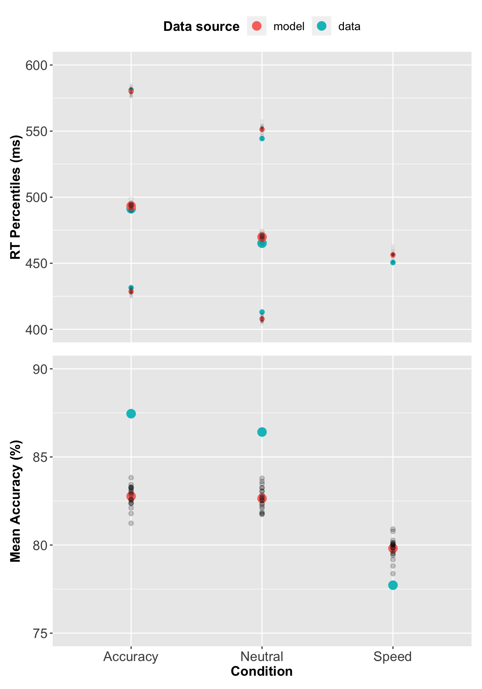
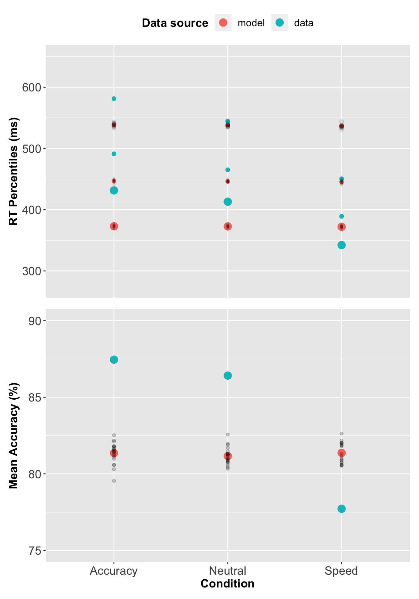
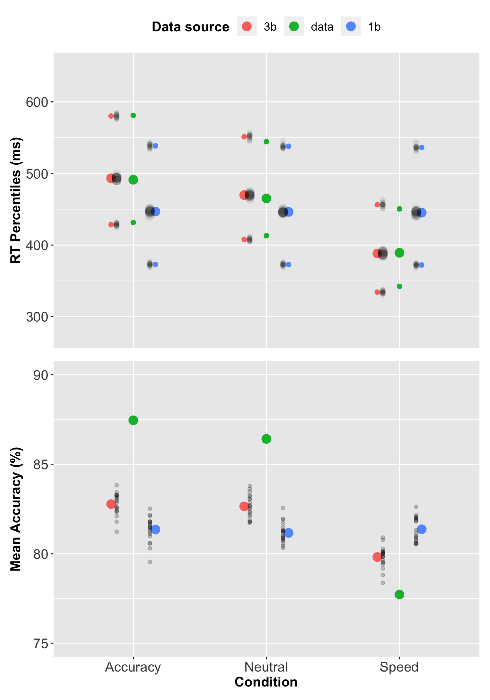

Chapter 3 PMwG sampler and sequential sampling models
In this chapter we’ll demonstrate how to use the PMwG sampler with a sequential sampling model; the Linear Ballistic Accumulator (LBA). Please ensure the PMwG and rtdists packages are installed. We currently recommended installing PMwG via devtools.
# The pmwg package will be on CRAN - this step will be removed.
install_github('newcastlecl\pmwg')library(pmwg)3.1 Description of Forstmann experiment
Forstmann et al looked at neural correlates of decision making under time pressure, with an aim to identify areas of the brain associated with speed-accuracy tradeoff. Imaging (fMRI) and behavioural data was collected; however, we will analyse behavioural data from the decision-making task only. In terms of modelling the data, Forstmann expected to find differences in thresholds (direction?) for each of the three speed-emphasis conditions. We have included the Forstmann et als data in the PMwG package as a data frame named forstmann. The sampler requires a data frame with a subject column. The subject column data type can be a factor or numeric.
Table 3.1 shows the first ten trials from the Forstmann dataset. Participants (n = 19) were asked to indicate whether a cloud of dots in a random-dot kinematogram (RDK) moved to the left or the right of the screen. The IV was a within-subject, speed-accuracy manipulation where, before each trial began, pariticipants were instructed to make their choice accurately (condition = 1), with urgency(condition = 3)or were presented with a neutral message (condition = 2). Stimuli moved either left (stim = 1) or right (stim = 2) and responses were left (resp = 1) or right (resp = 2). Response times (rt) were recorded in seconds. For more information about the design of the experiment please see the original paper.
| subject | condition | stim | resp | rt |
|---|---|---|---|---|
| 1 | 1 | 2 | 2 | 0.4319 |
| 1 | 3 | 2 | 2 | 0.5015 |
| 1 | 3 | 1 | 1 | 0.3104 |
| 1 | 1 | 2 | 2 | 0.4809 |
| 1 | 1 | 1 | 1 | 0.3415 |
| 1 | 2 | 1 | 1 | 0.3465 |
| 1 | 2 | 1 | 1 | 0.3572 |
| 1 | 2 | 2 | 2 | 0.4042 |
| 1 | 2 | 1 | 1 | 0.3866 |
| 1 | 1 | 2 | 2 | 0.3683 |
3.2 Linear Ballistic Accumulator Parameters
There are preliminary steps we need to complete before running the sampler. Let’s begin by defining the Linear Ballistic Accumulator (LBA) (Brown and Heathcote 2008) model parameters.
bthreshold parameter (the evidence required to trigger a response)vis drift rate or average speed of evidence accumulationAis the model’s start pointt0is non-decision timesvis the standard deviation of drift rate
3.3 Writing the log-likelihood function
Just as we did with the SDT example, we’ll write a slow and a fast log-likelihood function. The runtime difference is caused by calling the dLBA function line-by-line for the slow log-likelihood and calling the dLBA function once for all the data in the fast log-likelihood function. When writing a new log-likelihood function, we suggest starting with a slow, line-by-line function for easier debugging.
The LBA log-likelihood function takes three arguments:
xis a named parameter vector (e.g.pars)datais your dataset (e.g.forstmann). Your dataset must include a"subject"columnsample = FALSEcalculates a density function orTRUEgenerates a posterior, predictive sample that matches the shape of data.
The log-likelihood function shown below includes functions from the rtdists package for generating data and estimating density. If you’d like to run through this example, it is best to copy the tw_lba_ll function from the code block below rather than copying from the separate code chunks where curly braces have been removed.
NOTE: The trialwise log-likelihood is very slow and inneficient because rLBA and dLBA will be called on each line of the data. This will result in very slow sampling times and is a consequence of the rtdists package, not an issue with the PMwG sampling speed. If you have experience writing log-likelihoods, we recommend writing a faster version than our trialwise function, or use the fast log-likelihood we have written in section 3.3.1. If you are new to modelling, we recommend trying the trialwise (slow) log-likelihood function as it is easier to follow, troubleshoot and is less likely to result in errors.
Let’s begin by installing rtdists package…
library(rtdists)and now our complete trialwise (slow) log-likelihood function.
1 2 3 4 5 6 7 8 9 10 11 12 13 14 15 16 17 18 19 20 21 22 23 24 25 26 27 28 29 30 31 32 33 34 35 36 37 38 39 40 41 42 43 44 45 46 47 48 49 50 51 52 53 54 55 56 57 58 59 60 61 62 63 | |
The first line in the tw_lba_ll function (Line 2 below) takes the exponent of the parameter values. We do this as the LBA expects values on the real number line. Line 3 and 4 then checks RTs are faster than the non-decision time parameter t0, and return a low value, indicating that the given value of t0 is not likely.
2 3 4 | |
Now we create a vector with values sampled from the posterior distribution OR estimating the density. If sample = TRUE, we remove all responses (resp) and rts. This means when we return data, we are returning the posterior predictive data which matches with the associated subject and condition.
If sample = FALSE (the else statement from line 11) we create an out vector, with a length equal to the number of rows in the dataset, and store the likelihood value for each subject and condition.
7 8 9 10 11 12 13 | |
Next, we loop over rows in the dataset. In this for loop, we find the values (x) of each parameter in our model for each row, so that any conditional parameters (for example b in our model) are correctly assigned. For example, we want to calculate the density for a model that has three threshold parameters (one for each condition; 1 = accuracy, 2 = neutral, or 3 = speed). In the loop, we paste b. to the condition in row [i] and add A (the start point - we do this to ensure the threshold is greater than the starting point).
On line 22 we set the order of our drift rate parameters. Recall that stim = 1 is a stimulus moving to the left. dLBA requires the drift accumulators to be matched i.e. when data$stim[i] == 1, the drift rate for the correct accumulator (vc) is in position one, so we order the drift rates; vs = c(vc, ve). The else statement addresses right moving stimuli data$stim[i] == 2, the incorrect accumulator (ve) is the first accumulator, so the drift rate parameter order is vs = c(ve, vc). This ensures that the correct (vc) and error (ve) drift rates match with the corresponding accumulators for given stimuli.
15 16 17 18 19 20 21 22 23 24 25 26 | |
The following section calls the relevant rtdists function depending on whether we are sampling from the posterior (rLBA) or estimating the density (dLBA). We then input the parameters from above (using the names set above) into the relevant function. When generating data from the posterior (Line 30-37), rLBA is called for each line of the data, storing the generated rt and response given the posterior parameter estimates in the tmp vector (which we then reassign to the empty data$rt and data$resp columns). We set n = 1, since we are calling rLBA on 1 row of the data. When estimating the density (Line 42 to 50), dLBA is called for each line of the data, storing the probability of the rt and response under the proposed parameters (x) in the out vector.
29 30 31 32 33 34 35 36 37 38 39 40 41 42 43 44 45 46 47 48 49 50 51 52 | |
This final section tells the function what to return; data - when sampling posterior predictive (Line 56) - or the sum of the likelihoods - when estimating density (Line x - y). On line 58 we take all implausible likelihood values, assign them to the bad object and then (line 59) set them to zero. The final two lines within the else statement take the log of all likelihood values, sums them, assigns the model’s log-likelihood value to the out variable and returns that value.
55 56 57 58 59 60 61 62 | |
3.3.1 Fast LBA Log-likelihood Function
As the data is large, and the dLBA function takes some time to run, the log-likelihood code above is computationally inefficient. There are several ways to improve the log-likelihood’s performance; in our example below, we reduce the number of calls to dLBA to one call. We do this by passing a list of dLBA parameter values for the length of the data.
Note: When generating posterior predictive data, the rLBA function is still executed for each row of data; however, it is only executed several times, so computational efficiency is uncompromised.
fast_lba_ll3b <- function(x, data, sample = FALSE) {
x <- exp(x)
if (any(data$rt < x["t0"])) {
return(-1e10)
}
if (sample) {
data$rt <- rep(NA, nrow(data))
data$resp <- rep(NA, nrow(data))
} else {
out <- numeric(nrow(data))
}
if (sample) {
for (i in 1:nrow(data)) {
A = x["A"]
b = x[paste0("b.", data$condition[i])] + A
vc = x["vc"]
ve = x["ve"]
t0 = x["t0"]
s = c(1, 1)
if (data$stim[i] == 1) {
vs = c(vc, ve)
} else {
vs = c(ve, vc)
}
tmp <- rLBA(n = 1,
A = A,
b = b,
mean_v = vs,
sd_v = s,
t0 = t0,
dist = "norm",
silent = TRUE
)
data$rt[i] <- tmp$rt
data$resp[i] <- tmp$resp
}
} else {
all_b <- numeric(nrow(data))
vlist <- list("v.1" = numeric(nrow(data)),
"v.2" = numeric(nrow(data)))
stim <- levels(data$stim)
con <- levels(data$condition)
for (c in con) {
for (s in stim) {
use <- data$condition == c & data$stim == s
if (any(use)) {
bs = x[paste0("b.", c)] + x["A"]
all_b[use] = bs
vc = x["vc"]
ve = x["ve"]
if (s == 1) {
vlist$v.1[use] = vc
vlist$v.2[use] = ve
} else {
vlist$v.1[use] = ve
vlist$v.2[use] = vc
}
}
}
}
out <- dLBA(rt = data$rt,
response = data$resp,
A = x["A"],
b = all_b,
mean_v = vlist,
sd_v = c(1, 1),
t0 = x["t0"],
distribution = "norm",
silent = TRUE
)
}
if (sample) {
return(data)
} else {
bad <- (out < 1e-10) | (!is.finite(out))
out[bad] <- 1e-10
out <- sum(log(out))
return(out)
}
}You should improve your log-likelihood’s performance as you see fit. When you’re confident that your log-likelihood code functions correctly, we suggest saving it as a separate script so it can be sourced and loaded when running the sampler. If you’re learning how to write log-likelihood functions, take a look at our troubleshooting section for tips.
3.4 PMwG Framework
Now that we have a log-likelihood function, we can set up the PMwG sampler. Running the sampler follows the same procedure outlined in the SDT chapter; we need to set up a vector of model parameter names, create a priors object, source our LBA log-likelihood script and then create our sampler object.
Let’s begin by creating a vector of model parameter names, which we’ll use in our log-likelihood function. You can name this object as you wish; however, in our example, we name it pars.1 For the forstmann dataset, we use three threshold parameters (one b for each condition) because we assume that the condition has an effect on level of caution, we include two drift rate parameters: v1 for the incorrect accumulator and v2 for the correct accumulator, a start point parameter A and a non-decision time t0 parameter.
We’ve made a decision to set the sv to 1 to satisfy the scaling properties of the model. As such, we haven’t included the sv parameter in the pars vector - it is found in the LBA’s log-likelihood function (see above).
pars <- c("b1", "b2", "b3", "A", "v1", "v2", "t0")For the mean of the distribution for random effects (theta_mu), we assume a multivariate normal prior. The user can specify the mean and variance of this prior distribution using the object priors, which has elements theta_mu_mean and theta_mu_var. A typical setting for LBA models is to set theta_mu_mean to be a zero vector and to set theta_mu_var to be a multiple of the identity matrix, e.g. with 9 on the diagonal (representing a standard deviation of 3 for the subject-level means in the prior).
We create our priors object; a list that contains two components:
theta_mu_meana vector containing the prior for model parameter meanstheta_mu_varthe prior covariance matrix for model parameters.
priors <- list(theta_mu_mean = rep(0, length(pars)),
theat_mu_var = diag(rep(1, length(pars)))
)Now source and load your log-likelihood script before you create the sampler object.
source(file = "fast_lba_ll3b.R")Next we specify the PMwG sampler object. The pmwgs function takes a set of arguments (listed below) and returns a list containing the required components for performing the particle metropolis within Gibbs steps.
data =your data - a data frame (e.g.forstmann) with a column for participants calledsubjectpars =the model parameters to be used (e.g.pars)prior =the priors to be used (e.g.priors)ll_func =name of log-likelihood function to be used (e.g.fast_lba_ll)
sampler <- pmwgs(data = data,
pars = pars,
prior = priors,
ll_func = fast_lba_ll3b
)3.4.1 Model start points
There is also an option to set model start points. We have specified sensible start points for the forstmann dataset under the LBA model. If you choose not to specify start points, the sampler will randomly sample points from the prior distribution.
The start_points object contains two vectors:
mua vector of start points for the mu of each model parametersig2vector containing the start points of the covariance matrix of covariance between model parameters.
Note: Start points must be on the real line. Our log-likelihood function immediately takes the exponent of the start points and only returns positive values, so we use the log of sensible start points here.
start_points <- list(mu = c(log(1.2), log(1.2), log(1.2),
log(1.4), log(1.3), log(3.5),
log(0.13)),
sig2 = diag(rep(.01, length(pars)))
)3.4.2 Running the sampler
Setup is now complete and we can run the sampler. First, we use the init function to generate initial start points for the random effects and store them in the sampler object. Here we specify start points by providing values for the start_mu and start_sig arguments.
sampler <- init(sampler,
start_mu = start_points$mu,
start_sig = start_points$sig2
)
To run the sampler, we use the run_stage function. To execute the run_stage function, you must provide values for two arguments:
pmwgs =thesamplerobject including parameters that were created by theinitfunction above.stage =the sampling stage (In order;"burn","adapt"or"sample").
The following arguments listed below are optional:
iter =is the number of iterations for the sampling stage. This is similar to running deMCMC, where it takes many iterations to reach the posterior space. Default = 1000.particles =is the number of particles generated on each iteration. Default = 1000.display_progress =display a progress bar during samplingepsilon =is a value between 0 and 1 which reduces the size of the sampling space. We use lower values of epsilon when there are more parameters to estimate. Default = 1.n_cores =the number of cores on a machine you wish to use to run the sampler. This allows sampling to be run across cores (parallelising for subjects). Default = 1. Note: Settingn_coresgreater than 1 is only permitted on Linux and Mac OS X machines.
The first sampling stage is burn-in "burn". The burn-in stage allows time for the sampler to move from the (arbitrary) start points that were provided by the user to the mode of the posterior distribution. This can be checked by examining the chains for stationarity. We take the sampler object created in the init function above, set the stage argument to "burn" and assign the outcome to an object called burned.
What about iter, particles and epsilon?
burned <- run_stage(sampler,
stage = "burn",
iter = 500,
particles = 2000,
epsilon = .5
)Next is the adaptation stage "adapt". The adaptation stage draws samples using a simple, but relatively inefficient proposal distribution (the same proposal distribution as the "burn"stage). Enough samples are drawn to allow the algorithm to estimate a much more sophisticated and efficient proposal distribution, using conditional normal distributions. We take the burned object created in the previous stage and set iterations iter = to a high number (e.g. 10000), as it should exit before reaching this point. If it doesn’t, there is likely an issue with acceptance rates, the likelihood function or limited data to operate on (i.e. few trials in some conditions). Here, we have saved the outcome of the adaptation stage to an object called adapted.
adapted <- run_stage(burned,
stage = "adapt",
iter = 10000,
particles = 2000,
epsilon = .5
)The final stage is the sampling stage "sample". The sampling stage uses the sophisticated and adaptive conditional normal proposal distributions. This allows for very efficient sampling, using far fewer particles. Samples from this stage are taken from the ‘posterior distribution’ and stored in the sampled object.
sampled <- run_stage(adapted,
stage = "sample",
iter = 1000,
particles = 200,
epsilon = .5
)The sampled object includes all samples from the "sample" stage above and the following elements:
data: your data (data frame) you included in your analysispar_names: parameter namesn_pars: number of parametersn_subjects: number of subjectssubjects: subject IDs (1:n)prior: list of the prior usedll_func: the likelihood function specifiedsamples:alpha: three dimensional array of random effects draws (dim = parameters x subjects x samples)theta_mu: two dimensional array of parameter draws (dim = parameters x samples)theta_sig: three dimensional array of covariance matrix draws (dim = covariance x samples)stage: specifies the stage the sample is from (length = samples)subj_ll: likelihood value for each subject for each iteration (dim = subject x samples)a_half: the parameter used in calculating the inverse Wishart (dim = parameters x samples)idx: total number of sampleslast_theta_sig_inv: the inverse of the last sample for theta_sig (the variance-covariance matrix).
You should save your sampled object at this point.
save(sampled, file = "forst3bSamp.RData")3.5 Simulating Posterior Predictive Data
We can generate posterior predictive data by setting sample = TRUE in our log-likelihood function to generate response times and responses given the posterior parameter estimates for each subject. To do this, we use the gen_pp_data function below, which calls our log-likelihood function embedded in our sampled object. The gen_pp_data function takes four arguments:
sampled: is the object/output from the PMwG samplern: the number of posterior samplesll_func =: the log-likelihood function embedded in thesampledobjectrbind.data =: bind the rows of each predictive sample to SOMETHING
gen_pp_data <- function (sampled, n, ll_func = sampled$ll_func, rbind.data = TRUE) {
sampled_stage <- length(sampled$samples$stage[sampled$samples$stage == "sample"])
iterations <- round(seq(from = (sampled$samples$idx - sampled_stage),
to = sampled$samples$idx,
length.out = n))
data <- sampled$data
S <- sampled$n_subjects
pp_data <- list()
for (s in 1:S){
print(paste0("subject", s))
for (i in 1:length(iterations)) {
print(i)
x <- sampled$samples$alpha[, s, iterations[i]]
names(x) <- pars
out <- ll_func(x = x,
data = data[data$subject == s, ],
sample = TRUE)
if (i == 1){
pp_data[[s]] = cbind(pp_subj = i, out)
}
else {
pp_data[[s]] = rbind(pp_data[[s]],
cbind(pp_subj = i, out))
}
}
}
if (rbind.data){
tidy_pp_data <- do.call(rbind, pp_data)
return(tidy_pp_data)
}
else {
return(pp_data)
}
}We generate 20 posterior predictive data samples.
pp_data_3b <- gen_pp_data(sampled, n = 20)The returned data is a matrix with the same dimensions and names as forstmann – with the addition of pp_iter column. pp_iter is the iteration of posterior sample (in this example i = 1:20) for the corresponding subject. We now have two matrices based on samples from either model. The response (resp) and response time (rt) columns now contain posterior predictive data.
In the next section, we will use the posterior predictive data to assess descriptive adequacy.
3.5.1 Assessing Descriptive Adequacy (goodness of fit)
Now we will plot the posterior predictive data against the real data. This may only be useful for some users, as what you do with your data is domain specific.
# Subject x condition Q1, median and Q3 respone time + mean accuracy for Forstmann dataset
pq3b <- forstmann %>%
group_by(condition, subject) %>%
summarise(Q1 = quantile(rt, prob = 0.25),
median = median(rt),
Q3 = quantile(rt, prob = 0.75),
acc = mean(ifelse(stim == resp, 1, 0)),
.groups = "keep"
)
# Subject x condition Q1, median and Q3 respone time for posterior predictive data
pp_pq3b <- pp_data_3b %>%
group_by(condition, pp_iter, subject) %>%
summarise(Q1 = quantile(rt, prob = 0.25),
median = median(rt),
Q3 = quantile(rt, prob = 0.75),
acc = mean(ifelse(stim == resp, 1, 0)),
.groups = "keep"
)
# Combine data with posterior predictive data and add data source
pq3b <- bind_rows(cbind(src = rep("data", nrow(pq3b)), pq3b),
cbind(src = rep("model", nrow(pp_pq3b)), pp_pq3b)
)
# Mean Q1, median, Q4 and accuracy for data and posterior predictive data
av_pq3b <- pq3b %>%
group_by(src, condition) %>%
summarise_at(vars(Q1:acc), mean)
# Variances of posterior samples
pp_var3b <- pq3b %>%
filter(src != "data") %>%
group_by(condition, pp_iter, src) %>%
summarise_at(vars(Q1:acc), mean)
# Convert source column to a factor and add labels
av_pq3b$src <- factor(av_pq3b$src,
levels = c("model", "data"),
labels = c("model", "data")
)
pp_varsrc3b <- factor(pp_var3b$src,
levels = c("model", "data"),
labels = c("model", "data")
)
# Rename conditions
levels(av_pq3b$condition) <-
levels(pp_var3b$condition) <- c("Accuracy", "Neutral", "Speed")
# Convert rt to milliseconds and acc to percentage
av_pq3b$acc <- 100 * av_pq3b$acc
pp_var3b$acc <- 100 * pp_var3b$acc
av_pq3b[, c("Q1", "median", "Q3")] <- 1000 * av_pq3b[, c("Q1", "median", "Q3")]
pp_var3b[, c("Q1", "median", "Q3")] <- 1000 * pp_var3b[, c("Q1", "median", "Q3")]
3.6 Evaluating different models - single threshold LBA
Now let’s run through an example where the model differs and we assume that participants’s level of caution does not change with emphasis instructions i.e. the threshold for Accuracy, Neutral, and Speed conditions is the same. We will call this our “single threshold LBA model”. The single threhold LBA model’s log-likelihood has one b parameter, instead of three (see line 18, 31 and 64 below).
For brevity, we specify only the ‘fast’ log-likelihood function for the single threshold model.
1 2 3 4 5 6 7 8 9 10 11 12 13 14 15 16 17 18 19 20 21 22 23 24 25 26 27 28 29 30 31 32 33 34 35 36 37 38 39 40 41 42 43 44 45 46 47 48 49 50 51 52 53 54 55 56 57 58 59 60 61 62 63 64 65 66 67 68 69 70 71 72 73 74 75 76 77 78 | |
3.6.1 PmWG framework for a single threshold model
The PmWG sampler procedure remains the same for all models. For our three threshold LBA model, we need the updated log-likelihood function from above, an updated parameter vector, start points and priors.
# Load the log-likelihood script
source(file = "fast_lba_ll1b.R")
# Specify the parameter vector with single threshold (b) parameter
pars <- c("A","b","vc","ve","t0")
# Specifiy a priors list
priors <- list(
theta_mu = rep(0, length(pars)),
theta_sig = diag(rep(1, length(pars)))
)
# Setup your sampler object - include your data, parameter vector,
# priors and log-likelihood function
# Note: Your log-likelihood function must be loaded before this point
sampler <- pmwgs(
data = forstmann,
pars = pars,
prior = priors,
ll_func = fast_lba_ll1b
)
# Start points are not included in this example
# Initiatlise the sampler
sampler <- init(sampler)
# Burn-in stage
burned <- run_stage(sampler,
stage = "burn",
iter = 500,
particles = 1000,
epsilon = .5)
# Adaptation stage
adapted <- run_stage(burned,
stage = "adapt",
iter = 10000,
particles = 1000,
epsilon = .5)
# Sample stage
sampled <- run_stage(adapted,
stage = "sample",
iter = 1000,
particles = 200,
epsilon = .5)Note: we keep the priors, start points, number of iterations and particles the same as our three threshold LBA model, so there is no bias for either model.
3.7 Checking Descriptive Adequacy of 1b model.
The checking procedure below is the same as the three threshold LBA model, except we use the single threshold LBA model’s sampled object/data.
load("forstmann1b_sampled.RData")As we did for the three threshold LBA model, we generate 20 posterior predictive data samples. Note: this function is from section 3.5
pp_data_1b <- gen_pp_data(sampled, n = 20)# Subject x condition Q1, median and Q3 respone time + mean accuracy for Forstmann dataset
pq1b <- forstmann %>%
group_by(condition, subject) %>%
summarise(Q1 = quantile(rt, prob = 0.25),
median = median(rt),
Q3 = quantile(rt, prob = 0.75),
acc = mean(ifelse(stim == resp, 1, 0)),
.groups = "keep"
)
# Subject x condition Q1, median and Q3 respone time for posterior predictive data
pp_pq1b <- pp_data_1b %>%
group_by(condition, pp_iter, subject) %>%
summarise(Q1 = quantile(rt, prob = 0.25),
median = median(rt),
Q3 = quantile(rt, prob = 0.75),
acc = mean(ifelse(stim == resp, 1, 0)),
.groups = "keep"
)
# Combine data with posterior predictive data and add data source
pq1b <- bind_rows(cbind(src = rep("data", nrow(pq1b)), pq1b),
cbind(src = rep("model", nrow(pp_pq1b)), pp_pq1b)
)
# Mean Q1, median, Q4 and accuracy for data and posterior predictive data
av_pq1b <- pq1b %>%
group_by(src, condition) %>%
summarise_at(vars(Q1:acc), mean)
# Variances of posterior samples
pp_var1b <- pq1b %>%
filter(src != "data") %>%
group_by(condition, pp_iter, src) %>%
summarise_at(vars(Q1:acc), mean)
# Convert source column to a factor and add labels
av_pq1b$src <- factor(av_pq1b$src,
levels = c("model", "data"),
labels = c("model", "data")
)
pp_varsrc1b <- factor(pp_var1b$src,
levels = c("model", "data"),
labels = c("model", "data")
)
# Rename conditions
levels(av_pq1b$condition) <-
levels(pp_var1b$condition) <- c("Accuracy", "Neutral", "Speed")
# Convert rt to milliseconds and acc to percentage
av_pq1b$acc <- 100 * av_pq1b$acc
pp_var1b$acc <- 100 * pp_var1b$acc
av_pq1b[, c("Q1", "median", "Q3")] <- 1000 * av_pq1b[, c("Q1", "median", "Q3")]
pp_var1b[, c("Q1", "median", "Q3")] <- 1000 * pp_var1b[, c("Q1", "median", "Q3")]
3.8 Model Comparison
In this section, we are going to compare the three threshold model and the single threshold model for the forstmann (2008) data to determine which model best represents the data. We begin by using a graphical method i.e. plotting the modelled data against the observed data.
3.8.1 Assessing Descriptive Adequacy Graphically
We can “assess descriptive adequacy” graphically by plotting the observed data, three threshold and single threshold data on a single plot.
# Subject x condition Q1, median and Q3 respone time + mean accuracy for Forstmann dataset
pq <- forstmann %>%
group_by(condition, subject) %>%
summarise(Q1 = quantile(rt, prob = 0.25),
median = median(rt),
Q3 = quantile(rt, prob = 0.75),
acc = mean(ifelse(stim == resp, 1, 0)),
.groups = "keep"
)
# Subject x condition Q1, median and Q3 respone time for posterior predictive data - 3b model
pp_pq3b <- pp_data_3b %>%
group_by(condition, pp_iter, subject) %>%
summarise(Q1 = quantile(rt, prob = 0.25),
median = median(rt),
Q3 = quantile(rt, prob = 0.75),
acc = mean(ifelse(stim == resp, 1, 0)),
.groups = "keep"
)
# Subject x condition Q1, median and Q3 respone time for posterior predictive data - 1b model
pp_pq1b <- pp_data_1b %>%
group_by(condition, pp_iter, subject) %>%
summarise(Q1 = quantile(rt, prob = 0.25),
median = median(rt),
Q3 = quantile(rt, prob = 0.75),
acc = mean(ifelse(stim == resp, 1, 0)),
.groups = "keep"
)
# Combine data with posterior predictive data for 1b and 3b models and add data source
pqall <- bind_rows(cbind(src = rep("data", nrow(pq)), pq),
cbind(src = rep("3b", nrow(pp_pq3b)), pp_pq3b),
cbind(src = rep("1b", nrow(pp_pq1b)), pp_pq1b)
)
# Mean Q1, median, Q4 and accuracy for data and posterior predictive data
av_pq <- pqall %>%
group_by(src, condition) %>%
summarise_at(vars(Q1:acc), mean)
# Variances of posterior samples
pp_var <- pqall %>%
filter(src != "data") %>%
group_by(condition, pp_iter, src) %>%
summarise_at(vars(Q1:acc), mean)
# Convert source column to a factor and add labels
av_pq$src <- factor(av_pq$src,
levels = c("3b", "data", "1b"),
labels = c("3b", "data", "1b")
)
pp_varsrc <- factor(pp_var$src,
levels = c("3b", "data", "1b"),
labels = c("3b", "data", "1b")
)
# Rename conditions
levels(av_pq$condition) <-
levels(pp_var$condition) <- c("Accuracy", "Neutral", "Speed")
# Convert rt to milliseconds and acc to percentage
av_pq$acc <- 100 * av_pq$acc
pp_var$acc <- 100 * pp_var$acc
av_pq[, c("Q1", "median", "Q3")] <- 1000 * av_pq[, c("Q1", "median", "Q3")]
pp_var[, c("Q1", "median", "Q3")] <- 1000 * pp_var[, c("Q1", "median", "Q3")] The plots show that values in the three threshold model (red circles) better describe the data than the single threshold model (blue circles).
3.8.2 Model comparison via DIC
Another method of model comparison is using information criterions. Here we provide a function for calculating deviance information criterion (DIC).
pmwg_DIC <- function(sampled, pD = FALSE){
# Identify number of subjects
nsubj <- length(unique(sampled$data$subject))
# Mean log-likelihood of the overall (sampled-stage) model, for each subject
mean_ll <- apply(sampled$samples$subj_ll[, sampled$samples$stage == "sample"], 1, mean)
# Mean of each parameter across iterations.
# Keep dimensions for parameters and subjects
mean_pars <- t(apply(sampled$samples$alpha, 1:2, mean))
# Name 'mean_pars' so it can be used by the log_like function
colnames(mean_pars) <- sampled$par_names
# log-likelihood for each subject using their mean parameter vector
mean_pars_ll <- numeric(ncol(mean_pars))
data <- transform(sampled$data,
subject = match(subject, unique(subject)))
for (j in 1:nsubj) {
mean_pars_ll[j] <- sampled$ll_func(mean_pars[j, ],
data = data[data$subject == j,],
sample = FALSE)
}
# Effective number of parameters
pD <- sum(-2 * mean_ll + 2 * mean_pars_ll)
# Deviance Information Criterion
DIC <- sum(-4 * mean_ll + 2 * mean_pars_ll)
if (pD){
return(c("DIC " = DIC, " Effective parameters" = pD))
}else{
return(DIC)
}
}We calculate the DIC value for each model by passing the sampled object into the pmwgDIC function.
load("forstmann3b_sampled.RData")
sampled3b <- sampled
pmwg_DIC(sampled = sampled3b) DIC Effective parameters
-15431.90924 41.38816 load("forstmann1b_sampled.RData")
sampled1b <- sampled
pmwg_DIC(sampled = sampled1b) DIC Effective parameters
-10818.301739 5.489469 The three threshold model has a lower DIC value than the single threshold model, indicating a better explanation of the data. Based on the graphical evidence and the DIC, we can be confident that the three threshold model (i.e the model where threshold is varied with speed and accuracy instructions) is a better fit to our data than the single threshold model.
References
Brown, Scott, and Andrew Heathcote. 2008. “The Simplest Complete Model of Choice Response Time: Linear Ballistic Accumulation.” Cognitive Psychology 57 (3). Elsevier: 153–78.
The parameters you list in the
parsvector must match those included in your log-likelihood function i.e. they must have the same names and the same number of parameters. Refer to the troubleshooting section for more detail.↩